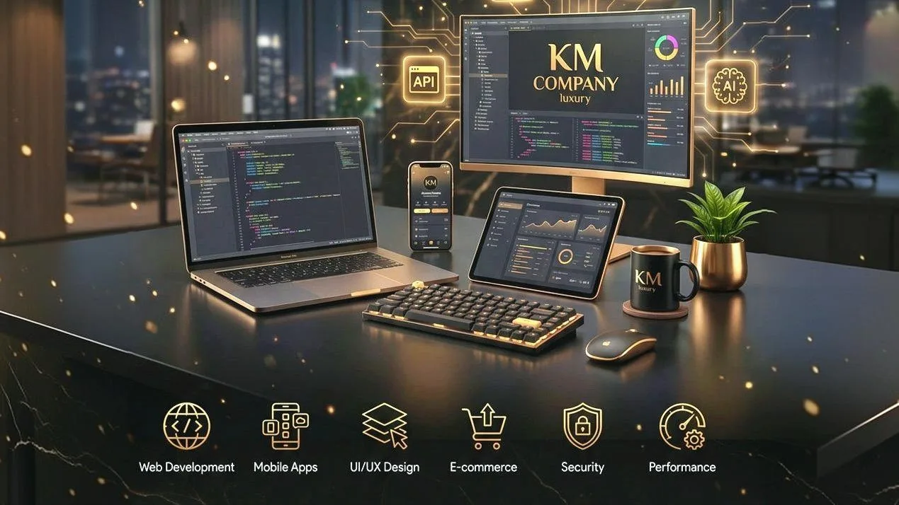
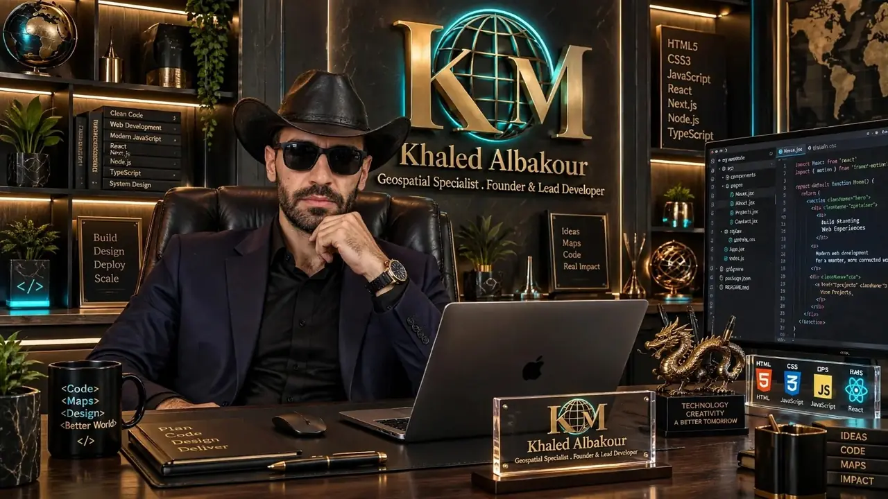

Sviluppo di siti e landing page
Siti veloci e responsive che comunicano con chiarezza e facilitano il passo successivo.
KM-Company realizza esperienze digitali chiare e responsive: siti aziendali, applicazioni web e strumenti geospaziali per l'agricoltura di precisione.

Una pratica indipendente e mirata che unisce sviluppo web, software pratico e soluzioni geospaziali.

FONDATORE / SVILUPPATORESviluppatore geospaziale e di agricoltura di precisione
Realizzo prodotti digitali utili, con attenzione a interfacce chiare, codice manutenibile e flussi di lavoro reali. Il mio lavoro comprende siti multilingue, software desktop, GIS, immagini satellitari e analisi dei campi supportata da droni.
KM-Company raccoglie questi lavori in un portfolio tecnologico pratico, basato su miglioramento continuo, stato dei progetti trasparente e soluzioni facili da comprendere e utilizzare.
Una selezione essenziale di servizi orientati a risultati concreti, interfacce accessibili e consegne affidabili.
Siti veloci e responsive che comunicano con chiarezza e facilitano il passo successivo.
Layout puliti, contrasto accessibile e interfacce per mobile, tablet e desktop.
Strumenti interattivi e dashboard orientati ai flussi di lavoro reali.
Flussi geospaziali, indicatori satellitari, mappatura dei campi e analisi di immagini da drone.
Software pratico per ambienti sul campo in cui la connessione può essere limitata.
Integrazione accurata, verifiche sui dispositivi, ottimizzazione e pubblicazione di siti statici.
Un buon software non riguarda solo l'aspetto visivo. Deve essere comprensibile, funzionare su schermi diversi, comunicare i propri limiti ed essere gestibile dopo la consegna.
Consulta i progettiPartire dall'obiettivo dell'utente, dall'ambiente e dai vincoli.
Contenuti leggibili, navigazione prevedibile e azioni visibili.
Verificare comportamento mobile, link, immagini, peso e stati di errore.
Distinguere i progetti online dai concetti e dalle funzioni ancora in sviluppo.
Scopri progetti di tecnologia geospaziale, agricola e umanitaria insieme ai siti che li presentano.
Per siti web, collaborazioni tecniche, progetti geospaziali o informazioni sul portfolio, contattami direttamente.
Compila il modulo: la richiesta si apre come messaggio WhatsApp o e-mail pronto da inviare. Nessun dato viene salvato su questo sito.
KM-COMPANY
Khaled Al-Bakour
Specialista geospaziale e fondatore · Lead Developer